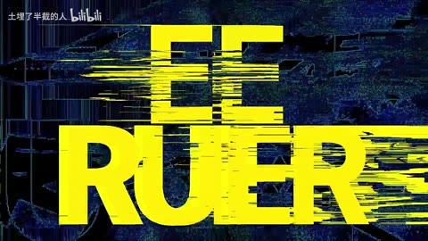

← 案例图谱H03 / 主要视觉研究样本
崩 溃 边 缘
土埋了半截的人 · 547.4万播放快照 · ≥10万 · B站原作 ↗
脸与眼的窗口对位、枪火段和字标段分别承担不同任务。先拆清原动画动作、局部拼贴和故障字，才知道自己应制作哪一层。

约95.367秒 · 案例代表帧从画面里找依据
这一例先看什么
前段矩形错位拼贴与中段动作镜头区分，末段霓虹字标收束；动画原有强构图与新增拼贴需要分别归属。
审美判断
人物、枪械和场景主焦点清楚，霓虹黄绿/紫蓝高对比；故障标题刻意短暂撕裂，不能拿瞬间字形碎裂判整段不可读。
迁移到自己的题材
战斗、运动、竞速、预告、产品性能演示、情绪冲突的高潮。
教学提问：观众能指出谁在攻击、朝哪边、是否击中吗？哪些是原素材的动作，哪些才是新增剪接或合成？
带画面的分析单元
图像标出取样时间，对应观察中的关键状态。单帧不能独立证明运动，连续性请结合摘录。表达作用与应用场景是教学解读，复现路线是建议，不是原作者工程还原。
分析单元 01 / 16—24秒
矩形局部拼贴/画中画
实际观察
眼睛与人物/机甲局部在矩形区域中叠压原背景；20秒和24秒抽帧可见多层矩形错位拼接。
表达作用（教学解读）
让多个时间、视角或人物关系同时出现；通过对位建立联系，而非只提高画面数量。
具体应用场景
记忆、对话、关系对照、主观视点、多人角色介绍、跨素材呼应。
复现建议（非原作者工程还原）
裁切矩形素材为多层，位置/缩放关键帧，必要时遮罩；已有源素材可较容易代码导出。
直出判断：已有选定素材后容易
常见误用：窗口太多无主次，眼位错位、边框挤脸，层的出现没有叙事理由。
分析单元 02 / 56.3—58.3秒
枪火、玻璃碎裂和电弧的高频变化
实际观察
56.3至57.033秒车内人物构图基本连续，黄光线和玻璃裂片变化；57.1秒附近变为机枪特写，57.633秒附近转为机械臂，58.233秒出现新人物。
表达作用（教学解读）
让能量、方向或主次可见；清楚的字芯和主体轮廓应保留。
具体应用场景
战斗、魔法、科技、梦境、舞台、标题强调、人物焦点。
复现建议（非原作者工程还原）
应先区分原动画动作和作者新增效果；不能把每次枪火闪烁算作剪辑转场。对应片源可直接裁切重排；独立重制人物/玻璃需复杂素材或动画。
直出判断：原片重剪容易；独立重制原动画困难
常见误用：只加大模糊半径；光源不影响周围环境；发光覆盖所有细节；把原片光效当新增。
分析单元 03 / 93.9—94.9秒
赛博朋克故障字卡/扫描错行
实际观察
霓虹青绿斜切Logo置于黑底，随后蓝色与粉红色水平块撕裂覆盖，字标换色、RGB色散和噪点，背景多次色块跳变。
表达作用（教学解读）
把短暂破坏作为失控、断裂、冲突或数字材质的提示。
具体应用场景
赛博题材、记忆中断、身份不稳、高潮强调；也可短时掩护连接。
复现建议（非原作者工程还原）
文本/Logo透明层，复制RGB通道错位，水平条带遮罩位移，噪声贴图，有限帧随机seed；指定字形需合法Logo或自己重画。
直出判断：简化二维机制容易
常见误用：全程持续导致麻木；色散让脸和字长期看不清；把所有亮度变化算成切镜。
分析单元 04 / 94.967—95.233秒
字标碎片爆散/金属纵深
实际观察
同一Logo拆成尖锐碎片并向镜头散开，中心青白光爆亮；看起来有挤出厚度和景深。
表达作用（教学解读）
把阅读顺序变成观看顺序；用字重、位置与停留表达强调、犹豫或压迫。
具体应用场景
观点短片、歌词视觉、人物宣言、章节、情绪高潮；先决定哪些词必须读懂，哪些只是纹理。
复现建议（非原作者工程还原）
2D切片加缩放旋转可做相似方向；精确挤出、反光和空间碎片需Blender等3D建模/逐镜调试。
直出判断：二维近似中等；精确三维需更多制作
常见误用：每个字都弹跳、整句停留不足、所有文字同时争主位。严肃叙事里无理由的回弹会削弱重量。
分析单元 05 / 95.3—95.767秒
超大无衬线字母跳排/前景Logo叠压
实际观察
亮黄色EDGE RUNNER字样被横向故障条切断，部分字母重复跳位，前景黑色尖锐字标收束，随后黑场。
表达作用（教学解读）
将平面关系变成有前后层次的观看空间；小幅运动可以放大情绪。
具体应用场景
静止画MAD、回忆、图像故事、海报动态化、人物介绍。
复现建议（非原作者工程还原）
逐帧文字图层、字符遮罩、水平切片与颜色关键帧；预设词和字体时容易导出。
直出判断：规则版容易
常见误用：所有层同速或反向乱动；人物像纸板；补洞不完整；视角变化超出原画信息。
用连续画面核对
保留原研究的多段局部摘录。片段含音轨不代表已听审；本资料不评价音乐卡点或对白节奏。
短时变化怎样理解
56.3–58.3秒至少3次不同构图连接，车内枪火与玻璃亮暗不计切镜；93.9–95.9秒字标故障和散碎是标题动画，不能逐闪当刀。
把镜头连接、版式更新、局部图层变化和镜内运动分开记录。所查窗口是下限，不是全片平均或AI／人工排名。
原始逐窗记录 →这次练习的约束
用三个动作片段组成8秒“准备—碰撞—结果”，先不用特效；再仅加一次光效和一次短停顿，检验是否更清楚。
先写“我希望观众明白／感到什么”，再选本页的一种手法。完成无效果基础版后再加层；解释新增层带来的收益和代价。
打开练习与复盘表 →来源、观看范围与制作归属
实际检查范围：{"overview_step_seconds": 4, "overview_frames": 26, "dense_windows_seconds": [[56.3, 58.3], [93.9, 95.9]], "continuous_full_playback": false, "audio_listened": false}
制作线索：B站搜索卡片和作者组委会介绍相互印证；需看工程才能核实制作方式。
边界：人工投入由简介支持，不证明零AI；角色动作、摄影机运动和原动画美术不能统称UP制作。基本故障能直出，金属挤出碎片需3D或调试。
播放快照保存时间（UTC）：2026-10-20T00:34:12.837776+00:00。H30制作方式为推定；同源改编、仿作和转载依原记录标注。
原始案例记录 · 选样表把你的判断留下来
笔记仅尝试保存在本机浏览器；浏览器策略可能限制本地文件存储，重要内容请导出。
沿着同一问题继续阅读
 H05
H05漫画、纸张与记忆
黑白漫画、红黑冲击、山景云海和白场尾声有疏密反差，人物尺度变化和墨迹/条带组织前后层次。
主要样本9个分析单元
 AI37
AI37方向、冲击与节奏
室内母子反打到古城红门、月下戏院、钱币/手细节，扩展同系列空间；灰红团队片尾与正文区分。
主要样本8个分析单元
 AI48
AI48细节、反应与转折
武侠幻想与真实宠物的反差，依赖落点和回收。水墨、打斗和日常拖鞋的材质变化，应服务反转而不是各自炫技。
主要样本7个分析单元